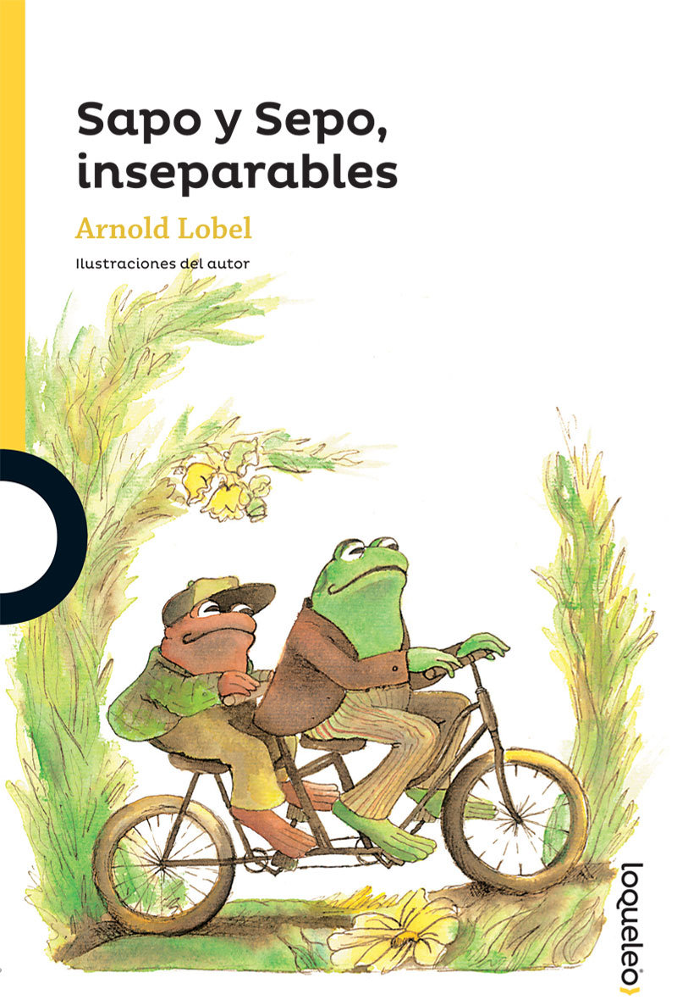
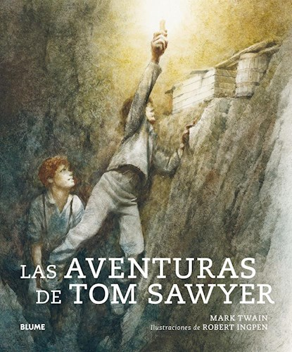
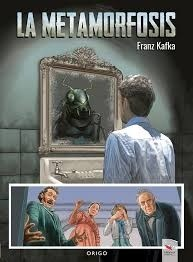

Libros de ciencia ficcion

Dune(1865)
Arrakis: un planeta desértico donde el agua es el bien más preciado y, donde llorar a los muertos es el símbolo de máxima prodigalidad. Paul Atreides: un adolescente marcado por un destino singular, dotado de extraños poderes y, abocado a convertirse en dictador, mesías y mártir. Los Harkonnen: personificación de las intrigas que rodean el Imperio Galáctico, buscan obtener el control sobre Arrakis para disponer de la melange, preciosa especia y uno de los bienes más codiciados del universo. Los Fremen: seres libres que han convertido el inhóspito paraje de Dune en su hogar, y que se sienten orgullosos de su pasado y temerosos de su futuro.

Fahrenheit 451 (1953)
Fahrenheit 451: la temperatura a la que el papel se enciende y arde. Guy Montag es un bombero y el trabajo de un bombero es quemar libros, que están prohibidos porque son causa de discordia y sufrimiento. El Sabueso Mecánico del Departamento de Incendios, armado con una letal inyección hipodérmica, escoltado por helicópteros, está preparado para rastrear a los disidentes que aún conservan y leen libros. Como 1984, de George Orwell, como Un mundo feliz, de Aldous Huxley, Fahrenheit 451 describe una civilización occidental esclavizada por los medios, los tranquilizantes y el conformismo. La visión de Bradbury es asombrosamente profética: pantallas de televisión que ocupan paredes y exhiben folletines interactivos; avenidas donde los coches corren a 150 kilómetros por hora persiguiendo a peatones; una población que no escucha otra cosa que una insípida corriente de música y noticias transmitidas por unos diminutos auriculares insertados en las orejas.
libros infantiles
Sapo y Sepo(1972)
Celebra el poder de la amistad con estas cuatro historias de Sapo y Sepo, recogidas ¡en un solo volumen! Comparte aventuras con nuestros queridos personajes mientras vuelan una cometa, resisten la tentación de comer galletas o buscan un botón perdido. No importa en qué tipo de situación se encuentren porque Sapo y Sepo siempre estarán juntos.
Tom Sawyer y Huckleberry Finn (1884)
Este libro, una alegre oda a las infinitas posibilidades de la infancia y basado en la vida del propio autor en Misuri, obtuvo un éxito inmediato y hoy sigue siendo una de las obras más populares la literatura estadounidense; sus personajes se han convertido en héroes en la imaginación colectiva de Estados Unidos. La novela también introdujo el personaje de Huckleberry Finn que, en 1884, se convertiría en el protagonista de su propia historia. Es el relato de unos meses en la vida de Tom, un chico huérfano que vive al cuidado de su tía Polly. Ella lo quiere de corazón pero lo somete a una disciplina que a Tom se le hace absurda y desagradable. Tom contempla el mundo de una manera muy distinta a como lo hacen los adultos con los que tiene que convivir. Más agreste y rebelde contra ese universo de los adultos es su amigo Huckleberry Finn, con el que vivirá innumerables aventuras.
Libros de Drama
La metamorfosis(1915)
«Una mañana, al despertar de sueños intranquilos, Gregor Samsa se encontró en su cama convertido en un monstruoso bicho». La metamorfosis es uno de los relatos más conmovedores e inquietantes de la literatura de todos los tiempos. La animalización del hombre manifiesta, entre otras cosas, la desesperanza frente a un destino personal pero también el pesimismo respecto a lo humano en términos más generales.
El silencio de nuestras palabras(2019)
Es medianoche y una fina niebla envuelve la ciudad dormida mientras en un edificio se origina un incendio cuyas llamas, lentas e invisibles, comienzan a devorar lo que encuentran. En uno de los pisos Alice se duerme mientras espera que Matthias, su nuevo amor del que todavía no se ha decidido a hablar a su madre, regrese. Bastien, el hijo de otra de las vecinas, lleva meses tratando de revelarle algo que podría romperle el corazón, pero no encuentra el coraje para hacerlo. Otro tipo de coraje es el que le falta a Polina, una antigua bailarina clásica, incapaz de aceptar su cuerpo tras la maternidad.Pero tanto para ellos como para el resto de habitantes del edificio ya no queda tiempo: los acontecimientos están a punto de revolucionar sus perspectivas, obligándolos a tomar decisiones extremas y a descubrir, al fin, que las distancias que nos separan de los demás sólo se superan con un amor absoluto